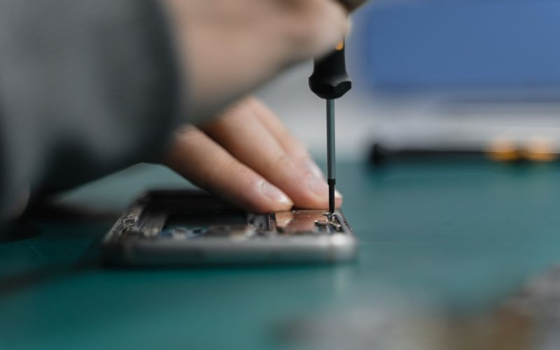

Le plus demandé
Réparation iPhone
Écran cassé, batterie, connecteur, caméra, désoxydation. Tous modèles d'iPhone.
- Remplacement d'écran cassé
- Changement de batterie
- Connecteur de charge
- Réparation après eau